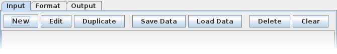

The Input tab contains controls to enter and manipulate input data to the program.

Clicking on New will bring up the Add Badge dialog:
The Number field can not be empty. If you wish to omit a number from the badge, you can enter the value '-1'. Name and Institution fields are optional. Refer to the Create Badges or Create Certificates topics on how these fields are used in the final design.
Each badge needs to specify three colors: Background, Text Background, and Text colors. Text Background and Text colors only apply to badges and not certificates. To modify a color, click on the appropriate color box to bring up a color chooser:
Finer selection of colors can be done by using the other color selection methods. For example, the RGB selection method allows you to pick a color using the well-known HTML hex color code:
Each badge can have an optional picture attached. You can load a picture either by browsing for PNG or JPG images using the Browse button, or you can paste an image directly from the clipboard (e.g. copy an image from the Internet on your browser, and click Paste to attach it to the badge). The following is an example of a badge data with a picture attached:
The image must be fit into either the badge's height (first picture) or width (second):
Clicking OK (assuming a valid Number is given) will commit the badge into the list.
Next topics: Data Manipulation, Create Badges, Create Certificates.